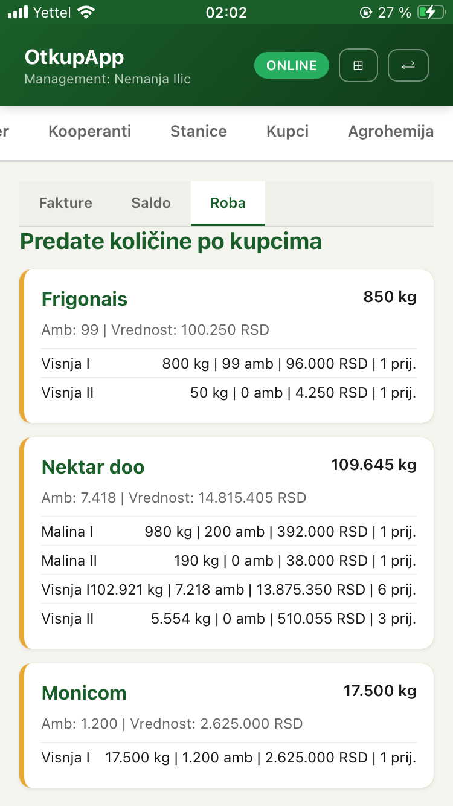
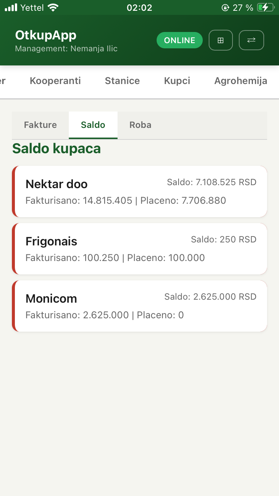
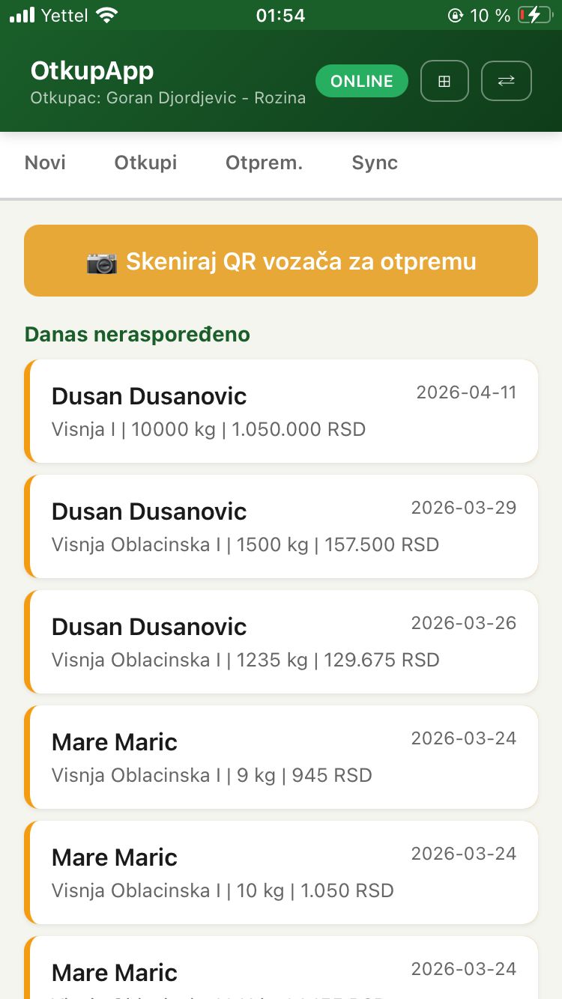
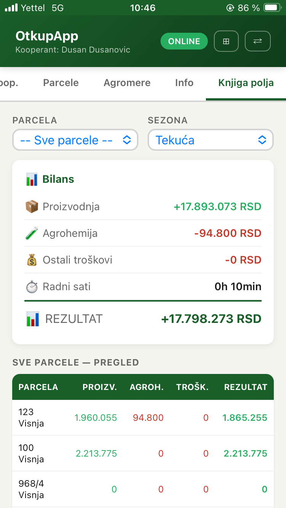

01
Podaci ostaju između papira, Excela, telefona i ljudi.
Informacija postoji, ali nije tamo gde je potrebna kada treba doneti odluku.
AgriX povezuje prijem robe, otkup, dokumentaciju, ambalažu, hladnjaču, terenski rad i proizvodnju u jednu operativnu celinu.


Informacija postoji, ali nije tamo gde je potrebna kada treba doneti odluku.
Otkup, ambalaža, hladnjača, kooperanti i dokumentacija počinju da pričaju različitim jezikom.
Sistem mora da prati proces dok se događa — ne tek kada se na kraju dana sve sabira.
Podatak nastaje tamo gde posao nastaje. AgriX ga zatim nosi kroz dokumentaciju, logistiku, hladnjaču i pregled poslovanja — bez paralelnih evidencija.

Jedan zapis menja ulogu dok prolazi kroz operaciju. Ne prepisuje se — nastavlja dalje.
Kooperant, roba, parcela i osnovni kontekst ulaze u proces.
Količina, klasa i ambalaža nastaju tamo gde je roba primljena.
Isti zapis formira otkupni blok i prati dalje poslovne dokumente.
Roba ostaje povezana kroz logistiku, prijem i sledljivost.
Management vidi operaciju iz podataka koji već postoje u toku.
Terenski rad ne treba da čeka kancelariju. Mobilni interfejs unosi podatak na mestu nastanka, dok centralni sistem zadržava pregled nad celom operacijom.
Kooperant — otkupni blok. Vozač — otpremnica. Hladnjača — zbirna i sledljivost. Prijemnica, faktura, SEF i banka nastavljaju se iz istog toka podataka.

Meteo i alarmi po parceli, prozori za prskanje, karenca, pametna procena doze, mapa parcela, radni sati, troškovi i bilans proizvodnje u jednoj aplikaciji.

AgriX GGAP koristi podatke koji već nastaju u otkupu i proizvodnji da bi priprema za kontrolu bila deo istog informacionog toka, a ne nova evidencija.
Pogledaj AgriX GGAP →Kada roba stiže, vozila čekaju i više ljudi radi istovremeno, softver više nije pomoćna evidencija. Postaje deo operacije.
Prijem, otkup, ambalaža, otprema i pregled poslovanja u povezanom toku.
Podaci nastaju van centrale, ali ostaju deo istog sistema i iste evidencije.
Za organizacije u kojima više ljudi i stanica istovremeno učestvuje u procesu.
Kooperanti, parcele, tretmani i proizvodni podaci povezani sa širim poslovnim tokom.
Kako roba dolazi, ko je prima, gde nastaje dokument, ko odlučuje i gde danas nastaju problemi.
AgriX se postavlja prema realnom toku firme umesto da firma svoj rad prilagođava generičkom programu.
Podešavanje, potrebni podaci, obuka i podrška tokom prelaska na novi način rada.
Počinjemo razgovorom o tome kako danas funkcioniše vaš otkup ili proizvodnja. Ako AgriX ima smisla za taj proces, pokazujemo ga na konkretnom modelu rada.